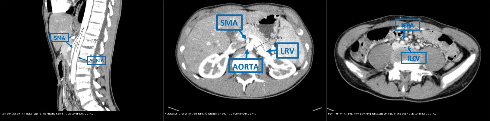
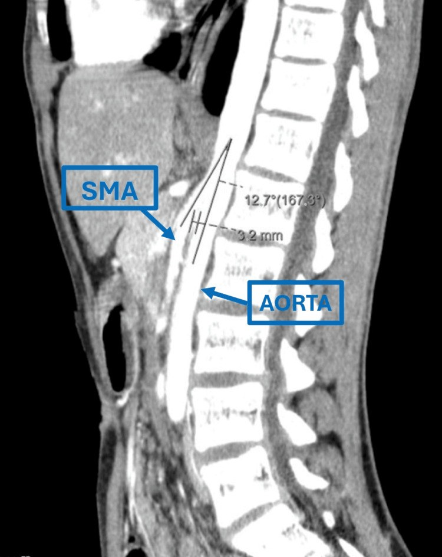
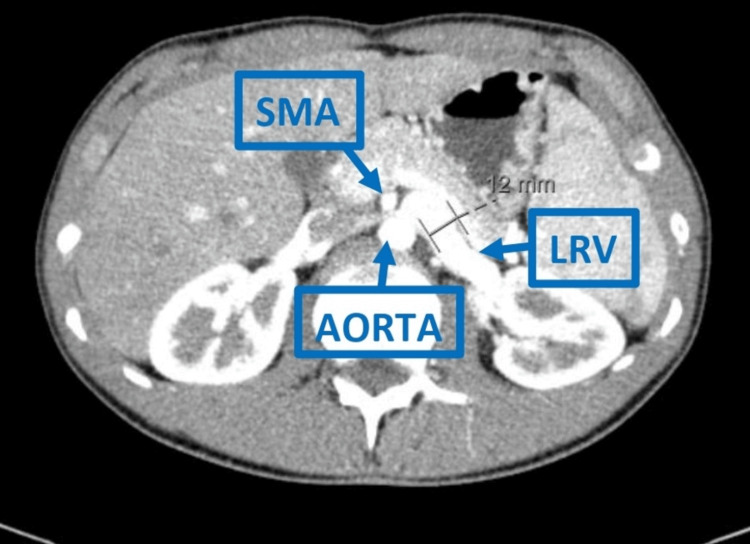
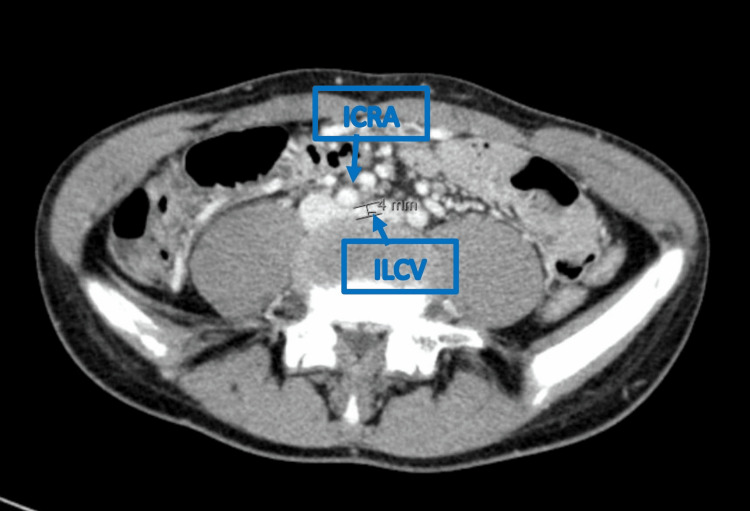

175 — Chèn ép mạch bụng & nút mạch tạng / Compression syndromes & Embolization
Tags: pattern:chen-ep-mach vung:mach-tang
Mức chắc chắn (certainty): tổng hợp y văn (literature synthesis) — nhóm tự biên từ y văn mở, chưa gắn ca nguyên văn đơn lẻ.
1. Tổng quan — góc kẹp + số đo chẩn đoán
- Nguyên lý chung (TẠI SAO): mọi hội chứng kẹp mạch đều do một mạch bị ép giữa hai cấu trúc cứng (ĐMC/cột sống/xương) và một cấu trúc mềm di động (mạc treo/ĐM/dây chằng). Mất đệm mỡ (sụt cân, gầy, dậy thì tăng trưởng nhanh) làm góc kẹp hẹp lại → hẹp động mạch (thiếu máu) hoặc hẹp tĩnh mạch (ứ trệ/giãn trước hẹp).
- Kìm SMA (mạc treo tràng trên, Wilkie): góc ĐMC–SMA < 22° + khoảng cách < 8 mm + tá tràng D3 kẹt + dạ dày giãn. Ca minh họa (dưới): góc 12,7° (tương ứng 167,3°) + khoảng cách 3,2 mm.
- Nutcracker (kẹp TM thận trái — LRV): TM thận trái kẹt giữa ĐMC–SMA + giãn trước hẹp (đoạn giãn ~12 mm) + tiểu máu/đau hông trái; tỷ số đường kính giãn/hẹp > 4–5.
- MALS (hội chứng dây chằng cung giữa): thân tạng (celiac trunk) gập chữ J + hẹp thì thở ra, giãn thì hít vào + đau sau ăn + sụt cân ở người trẻ gầy.
- May-Thurner (kẹp TM chậu chung trái): TM chậu chung trái (ILCV) bị ĐM chậu chung phải (ICRA) ép vào thân đốt sống (đoạn hẹp ~4 mm) → huyết khối tĩnh mạch sâu chi dưới trái + phù/đau chân ở người trẻ.
- Nút mạch tạng: chảy máu (giả phình ĐM lách/gan), u (HCC/TACE), chấn thương thoát thuốc — DSA + vật liệu nút (coil/hạt/keo).
2. Gamut đau sau ăn + sụt cân + mạch bị kẹp
- MALS: thân tạng gập + đau sau ăn + trẻ gầy — giải phóng dây chằng.
- Kìm SMA: tá tràng D3 kẹt + dạ dày giãn + gầy cấp — sonde + dinh dưỡng + tăng cân.
- Nutcracker: TM thận trái kẹt + tiểu máu + đau hông trái — theo dõi/stent/mổ.
- May-Thurner: huyết khối TM sâu chi dưới trái + phù chân ở người trẻ — chống đông ± stent.
- Chảy máu tạng: thoát thuốc/giả phình + tụt HA — nút mạch cấp cứu.
3. Bảng số đo + ma trận đối chiếu
| Hội chứng | Số đo chốt / hình ảnh điển hình | Chốt vào (rule-in) | Chốt loại (rule-out) | Xử trí |
|---|---|---|---|---|
| Kìm SMA (Wilkie) | Góc ĐMC–SMA < 22° + khoảng cách < 8 mm; dạ dày + D3 giãn, D3 cắt cụt | Góc < 22° + D3 cắt cụt + sụt cân/nôn | Góc bình thường (20–70°) → không phải kìm | Sonde + dinh dưỡng + tăng cân |
| Nutcracker | Tỷ số giãn/hẹp TM thận trái > 4–5; "beak" + giãn trước hẹp (~12 mm) | Tiểu máu + đau hông trái + beak | Không triệu chứng → biến thể, đừng stent | Theo dõi / stent / mổ |
| MALS | Thân tạng gập chữ J, hẹp thì thở ra | Hẹp thì thở ra + đau sau ăn + sụt cân | Hẹp cố định mọi thì → xơ vữa | Giải phóng dây chằng |
| May-Thurner | TM chậu chung trái kẹt dưới ĐM chậu chung phải (đoạn hẹp ~4 mm) | Huyết khối TM sâu trái + người trẻ | Huyết khối do nguyên nhân khác (ung thư, đông máu) | Chống đông ± stent |
| Chảy máu tạng | Thoát thuốc / giả phình trên CTA-DSA | Tụt HA + ổ chảy máu trên CTA | Không thoát thuốc → theo dõi | Nút mạch (coil/keo/hạt) |

*Cùng một bệnh nhân trẻ (14–18 tuổi) có ba hội chứng kẹp mạch cùng lúc. Trái: kìm SMA — CT sagittal, góc động–mạc treo tràng 12,7°, khoảng cách 3,2 mm. Giữa: nutcracker — TM thận trái kẹt giữa SMA và ĐMC. Phải: May-Thurner — TM chậu chung trái kẹt dưới ĐM chậu chung phải (đoạn hẹp ~4 mm). Nguồn: Andrade M et al., Cureus 2025 Fig. 1–3, CC BY 4.0 (ảnh ghép letterbox).*4. Protocol CTA mạch tạng
- CTA động mạch + MPR sagittal (góc ĐMC–SMA, thân tạng) + đo góc/khoảng cách.
- DSA khi can thiệp (nút mạch/chẩn đoán thiếu máu mạc treo mạn).
5. Cạm bẫy
- Góc hẹp sinh lý ở người gầy không triệu chứng — số + lâm sàng mới chẩn đoán.
- Nutcracker không triệu chứng — đừng stent vội khi tình cờ.
- Đau bụng mạn gán nhầm MALS — loại trừ tiêu hóa trước khi mổ dây chằng.
6. Tự lượng giá — Blind Quiz
Ca 1 — Nam 14 tuổi, nôn sau ăn 6 tháng + sụt cân nhiều, bụng trên giãn. Đọc CT sagittal.

- Gợi ý: đo góc giữa ĐMC và mạc treo tràng trên, đo khoảng cách hai mạch tại ngang tá tràng D3.
- Hỏi: chẩn đoán? Ngưỡng số đo? Xử trí đầu tay?
Bấm để hiện đáp án (findings + chẩn đoán)
- Dấu hiệu (findings): góc động–mạc treo tràng (aortomesenteric angle) 12,7° (< 22°) + khoảng cách 3,2 mm (< 8 mm), tá tràng D3 bị kẹp.
- Chẩn đoán (diagnosis): hội chứng kìm mạc treo tràng trên (SMA syndrome, Wilkie) — vì mất đệm mỡ mạc treo sau sụt cân → góc hẹp → kẹp D3.
- Xử trí: sonde + nuôi dưỡng + tăng cân trước; mổ (gastrojejunostomy) chỉ khi thất bại điều trị nội.
- Nguồn ảnh: Andrade M et al., Cureus 2025 Fig. 1, CC BY 4.0.
Ca 2 — Cùng bệnh nhân, tiểu máu + đau hông trái. Đọc CT axial.

- Hỏi: mạch nào bị kẹp? Dấu hiệu chốt? Khi nào can thiệp?
Bấm để hiện đáp án (findings + chẩn đoán)
- Dấu hiệu (findings): TM thận trái (LRV) kẹt giữa mạc treo tràng trên (SMA) và ĐMC, giãn trước chỗ hẹp (đoạn giãn ~12 mm) — dấu "beak".
- Chẩn đoán (diagnosis): hội chứng nutcracker — tỷ số đường kính giãn/hẹp > 4–5; tăng áp lực tĩnh mạch thận → tiểu máu.
- Xử trí: theo dõi nếu nhẹ; stent/ghép mạch khi đau nặng hoặc thiếu máu kéo dài.
- Nguồn ảnh: Andrade M et al., Cureus 2025 Fig. 2, CC BY 4.0.
Ca 3 — Cùng bệnh nhân, phù và đau chân trái. Đọc CT axial khung chậu.

- Hỏi: mạch nào ép mạch nào? Hậu quả lâm sàng? Xử trí?
Bấm để hiện đáp án (findings + chẩn đoán)
- Dấu hiệu (findings): TM chậu chung trái (ILCV) bị ĐM chậu chung phải (ICRA) ép vào thân đốt sống (đoạn hẹp ~4 mm).
- Chẩn đoán (diagnosis): hội chứng May-Thurner → ứ trệ → huyết khối tĩnh mạch sâu chi dưới trái ở người trẻ.
- Xử trí: chống đông, cân nhắc stent tĩnh mạch khi hẹp có triệu chứng/huyết khối tái phát.
- Nguồn ảnh: Andrade M et al., Cureus 2025 Fig. 3, CC BY 4.0.
Ca 4 — Ba chuỗi CT ghép cạnh nhau: gọi đúng tên từng hội chứng và số đo chốt của mỗi hình.
Bấm để hiện đáp án (findings + chẩn đoán)
- Trái = kìm SMA (góc 12,7°, khoảng 3,2 mm); Giữa = nutcracker (LRV kẹt giữa SMA–ĐMC); Phải = May-Thurner (ILCV < ICRA).
- Điểm cần nhớ: ba hội chứng kẹp mạch có thể cùng tồn tại — thấy một cái phải chủ động tìm hai cái còn lại (nhất là người trẻ gầy sụt cân).
- Nguồn: Andrade M et al., Cureus 2025, CC BY 4.0 (ảnh ghép letterbox).
Bài liên quan chéo
- 100 – Tổng quan hệ Bụng
- 140 – Chấn thương tạng (đã có) (nút mạch chảy máu)
- 170 – Phình ĐMC bụng (can thiệp mạch)
Không dùng để chẩn đoán độc lập khi chưa có người hướng dẫn.